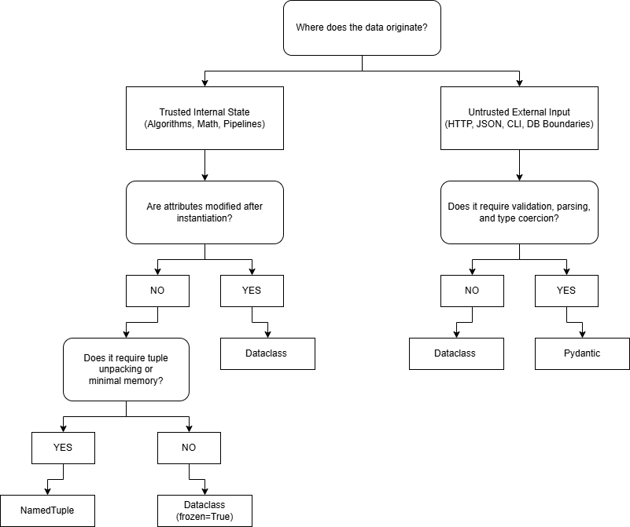

In-Memory Schemas and Domain Objects
- When modeling entities in Python, selecting the correct container shapes how an application manages state, enforces contracts, and consumes memory.
- Python provides multiple mechanisms for structured data representation:
- lightweight tuple-backed records via
NamedTuple - mutable or immutable boilerplate-free classes via standard library
dataclasses - schema-enforcing, parse-first domain layers via
Pydantic.
- lightweight tuple-backed records via
Immutable Sequence Records
- Python provides two variants of named tuples.
- The factory function
collections.namedtuple. - The class-syntax wrapper
typing.NamedTuple.
- The factory function
- Both produce subclasses of the built-in
tuple.
Memory Footprint and Tuple Backing
- A standard Python class stores its instance attributes in a per-instance dictionary (
__dict__). - This dictionary incurs noticeable memory overhead due to hash table sizing and dynamic pointer tracking.
NamedTupleinstances store their elements strictly as an indexed C array of pointers, identical to a standard Pythontuple.- They do not have
__dict__and__weakref__by default, which means zero dictionary hash-table overhead per instance and arbitrary attributes cannot be attached dynamically. - Because of this layout,
NamedTupleinstances require roughly the same memory as raw tuples while permitting field access through named attributes (point.x) alongside numerical indexing (point[0]).
collections.namedtupleconstructs a class dynamically using string identifiers.typing.NamedTupleprovides a class-based syntax compatible with static type checkers.
Immutable Record Semantics and Tuple Unpacking
- Instances of
NamedTupleare strictly immutable. - Updating a
NamedTuplerequires creating a new instance. - The generated class provides the
_replace()method for this purpose.
Gotchas and Failure Modes
- Unintended Equality Across Dissimilar Types
- Because
NamedTupleinherits fromtuple, two distinctNamedTupleclasses with the same field values evaluate as equal to each other, and equal to a plaintuple. - This behavior can obscure logic errors when comparing distinct domain entities.
- Because
- No Static Type Enforcement at Runtime
typing.NamedTupleannotations are metadata.- They do not validate input types during instantiation.
- Default Values Precedence: Once a field defines a default value, all subsequent fields must also specify a default value, matching standard Python positional argument rules.
Declarative Structural Modeling
Introduced in PEP 557, the dataclasses module provides a decorator that inspects class type annotations to automatically generate special methods (such as __init__, __repr__, and __eq__), reducing boilerplate while retaining standard mutable class semantics.
Mechanical Code Generation
- The
@dataclassdecorator inspects the class annotations and constructs dynamic method bodies compiled onto the class dictionary. - Unlike
NamedTuple, the generated__eq__method verifies that both operands share the identical class type, preventing cross-type equality bugs.
Inheritance and Field Ordering
- When a child dataclass inherits from a parent dataclass,
@dataclassmerges all parent fields followed by child fields into a single combined__init__parameter list. - A subclass cannot define a field without a default value if any parent class defines a field with a default value.
- Python positional argument rules require all defaulted arguments to follow non-defaulted ones.
- This inheritance contraint stems from the same positional parameter rule as
NamedTuple.
Solutions
- Give child fields default values.
- Forces fields to be passed as keyword arguments, removing positional ordering constraints.
Memory Optimization
- By default, dataclass instances store attributes in a standard
__dict__. - Supplying
slots=True(Python 3.10+) directs Python to generate a__slots__iterable, eliminating__dict__and__weakref__allocations. - Reduces memory consumption by 60%–70% relative to standard dataclasses when managing millions of instances.
- Precludes dynamic assignment of arbitrary attributes not declared as class fields.
Immutability
- Specifying
frozen=Truesimulates immutability by altering the generated assignment dunders. - Under
frozen=True, the generated__setattr__and__delattr__methods raise aFrozenInstanceError. - It automatically generates a valid
__hash__method (provided all individual fields are hashable), permitting instances to serve as dictionary keys or set members. frozen=Trueprotects the top-level references of an instance, but does not freeze mutable objects held within those fields.
Field Customization
- Using mutable default values directly in class field definitions causes shared-state bugs across instances.
- Dataclasses disallow mutable literals (such as
[]or{}) in default positions, requiringfield(default_factory=...)instead.
Post-Initialization Processing
- When a dataclass defines a
__post_init__method, the generated__init__calls it after assigning declared fields. - This hook handles derived state, validation, or internal setup.
- In a frozen dataclass, writing
self.digest = ...inside__post_init__triggers aFrozenInstanceError. - To bypass the generated
__setattr__during initial construction, useobject.__setattr__.
Parsing and Boundary Validation - Modern Pydantic (v2)
- Pydantic is a data validation and parsing library.
- Unlike standard library data structures, Pydantic does not merely hold typed attributes. = It parses, coerces, and validates incoming data payloads against declarative type schemas.
- In Pydantic v2, the core validation engine is written in Rust (
pydantic-core), providing a substantial performance improvement over v1.
Coercion vs. Strict Validation
- By default, Pydantic prefers coercion over outright rejection.
- It converts inputs into the targeted Python types when lossless conversion paths exist.
- To prevent automatic coercion, configure strict mode globally via
ConfigDictor per field viaField(strict=True).
Field Customization
- The
Fieldfunction defines validation constraints, aliases, and schema metadata. - By default, once an
aliasis defined on a field, Pydantic ignores the Python attribute name during initialization and exclusively looks for the alias key. - To populate fields via either their Python attribute name or their alias, configure
populate_by_name=Trueon the model.
Custom Validators - Field and Model Scopes
- Pydantic v2 replaces legacy
@validatorand@root_validatormethods with@field_validatorand@model_validator. -
@field_validatorProcesses individual fields.- Individual fields are validated while the model is still being constructed.
- Because self does not exist yet, the method cannot be an instance method—it receives the class (
cls) and the raw/coerced field value (v). - Can run in either
'before'mode (evaluating raw input before internal Pydantic coercion) or'after'mode (evaluating coerced types). - At class creation time, Pydantic checks whether every field name passed to it actually exists on the model.
- If the field name does not exist, Pydantic immediately raises a
PydanticUserErrorwhen the class is loaded. - To silence this check intentionally for inherited/dynamic setups, pass
check_fields=False.
-
@model_validatorinspects multi-field invariants across the entire entity.- Can run in
'before'mode (on the raw input dictionary) or'after'mode (on the instantiated model instance).
- Can run in
Serialization and Schema Dumping
- Pydantic v2 decouples model parsing from serialization via
model_dump()andmodel_dump_json()
Gotchas and Failure Modes
- Pydantic executes extensive type checking, coercions, and validation passes.
- Instantiating a Pydantic model is roughly \(10\times\) to \(30\times\) slower than a standard dataclass, making it ill-suited for tight internal loops processing millions of records per second.
- By default, Pydantic models are mutable, but post-initialization attribute assignments bypass field validation. To force validation during in-place assignments, enable
validate_assignment. - Like
dataclasses, settingmodel_config = ConfigDict(frozen=True)prevents assigning new values to fields directly on the model, but does not recursively freeze nested mutable collections (e.g., lists).
Architecture Comparison & Decision Rubric
- Choosing among
NamedTuple,dataclass, andPydanticdepends on where the data originates, the performance requirements, and whether the schema represents boundary input or internal state.

Structural and Behavioral Comparison
| Feature | typing.NamedTuple |
Standard dataclass |
dataclass(slots=True) |
Modern Pydantic (v2) |
|---|---|---|---|---|
| Underlying Type | Built-in tuple |
Standard Python class | Standard Python class | pydantic.BaseModel |
| Mutability | Strictly Immutable | Mutable (or frozen=True) |
Mutable (or frozen=True) |
Mutable (or frozen=True) |
| Storage Engine | C Array of Pointers | Standard __dict__ |
C-level __slots__ |
Rust pydantic-core |
| Validation on Init | None | None | None | Extensive (Coercion + Rules) |
| Performance Overhead | Negligible (\(1\times\)) | Very Low (\(1.2\times\)) | Very Low (\(1.1\times\)) | Moderate (\(10\times\text{ to }30\times\)) |
| Tuple Unpacking | Supported natively | Unsupported | Unsupported | Unsupported |
| Serialization Support | Native _asdict() |
Standard asdict() |
Standard asdict() |
High-Performance .model_dump() |
| Typing Contract | Structural sequence | Nominal | Nominal | Nominal |
Architectural Rules of Thumb
- Use Pydantic at System Boundaries:
- Use Pydantic when receiving data from sources outside the direct control of the running Python process, such as HTTP request bodies, environmental variables, configuration files, and external message queues.
- The parsing and validation layer acts as a firewall against ill-formed inputs.
- Use
dataclasses(withslots=True) for Core Business Entities:- Once data is parsed and validated, translate it into internal
dataclassesor domain objects. - Core business logic, mathematical algorithms, and internal data processing pipelines should run without validation overhead on every instantiation.
- Use
slots=Trueto minimize memory usage for high-volume entities.
- Once data is parsed and validated, translate it into internal
- Use
NamedTuplefor Lightweight Geometric, Mathematical, or Tabular Tuples:- Use
NamedTuplewhen an entity represents a fixed coordinate, vector, or tabular database record where immutability is natural and position-based access (unpacking, iteration, slicing) improves readability or integrates with existing tuple-based APIs. - Avoid using
NamedTuplefor large business domain entities with complex inheritance or shared equality spaces.
- Use